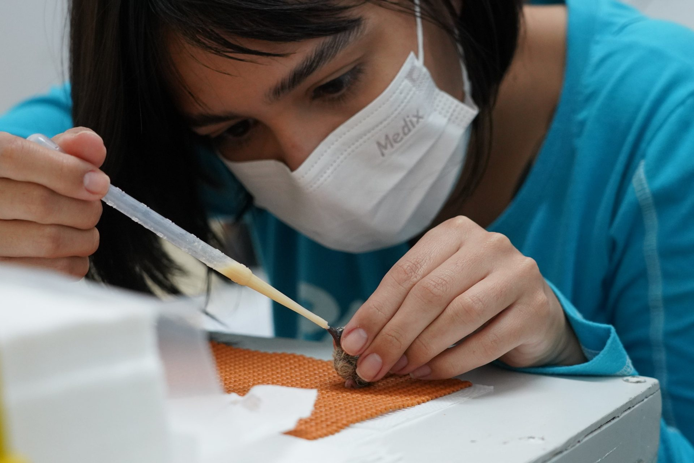

Pesquisa
Ciência aplicada à conservação da biodiversidade brasileira
A pesquisa científica é um dos pilares que sustentam a atuação dos zoológicos e aquários modernos. Mais do que espaços de visitação, essas instituições se tornaram centros de conhecimento aplicados à conservação da biodiversidade. A AZAB e seus associados reconhecem que investigar, compreender e compartilhar dados sobre a fauna brasileira é fundamental para orientar decisões e promover ações concretas de preservação, tanto in situ, no ambiente natural, quanto ex situ, sob cuidados humanos.
Nos zoológicos e aquários associados à AZAB, pesquisas são desenvolvidas em diferentes áreas. Estudos de biologia reprodutiva buscam compreender processos essenciais para a sobrevivência de espécies ameaçadas. Pesquisas em manejo populacional e genética apoiam a manutenção da variabilidade e a gestão de populações sob cuidados humanos. Trabalhos em ecologia comportamental revelam como interações sociais e ambientais influenciam o bem-estar e a adaptação dos animais. Na área da saúde e epidemiologia, o monitoramento de doenças orienta medidas preventivas e fortalece a vigilância sanitária. Por fim, investigações sobre a conservação de animais e plantas conectam o conhecimento científico às práticas de proteção de ecossistemas.
Essas iniciativas ganham força por meio de programas cooperativos, que reúnem informações de diferentes instituições para ampliar o alcance das ações. O compartilhamento de dados permite elaborar protocolos, estabelecer boas práticas, planejar reintroduções de espécies e reforçar populações naturais com segurança. Esse modelo colaborativo transforma dados em estratégias de conservação consistentes e duradouras.
Outro aspecto essencial é a construção de parcerias estratégicas. Os associados da AZAB trabalham em conjunto com universidades, institutos de pesquisa e órgãos governamentais, além de programas internacionais de conservação. Essa rede amplia a troca de conhecimento científico, estimula projetos inovadores e fortalece a produção de publicações técnicas e acadêmicas sobre a biodiversidade brasileira.
O compromisso da AZAB com a pesquisa é contínuo e dinâmico. Cada estudo realizado nas instituições associadas contribui para decisões mais eficazes na proteção da fauna, no manejo de espécies ameaçadas e na promoção da sustentabilidade ambiental. Assim, zoológicos e aquários se consolidam como atores indispensáveis para a conservação, unindo ciência, educação e gestão em prol do futuro da vida silvestre.

Ciência a serviço das espécies ameaçadas
Rolinha-do-planalto (Columbina cyanopis), espécie considerada Criticamente em Perigo pela IUCN e possui uma população conhecida de apenas 20 indivíduos na natureza | Foto: Parque das Aves
Conservação e educação caminham juntas
A pesquisa fortalece as ações de conservação e os programas educativos da AZAB.